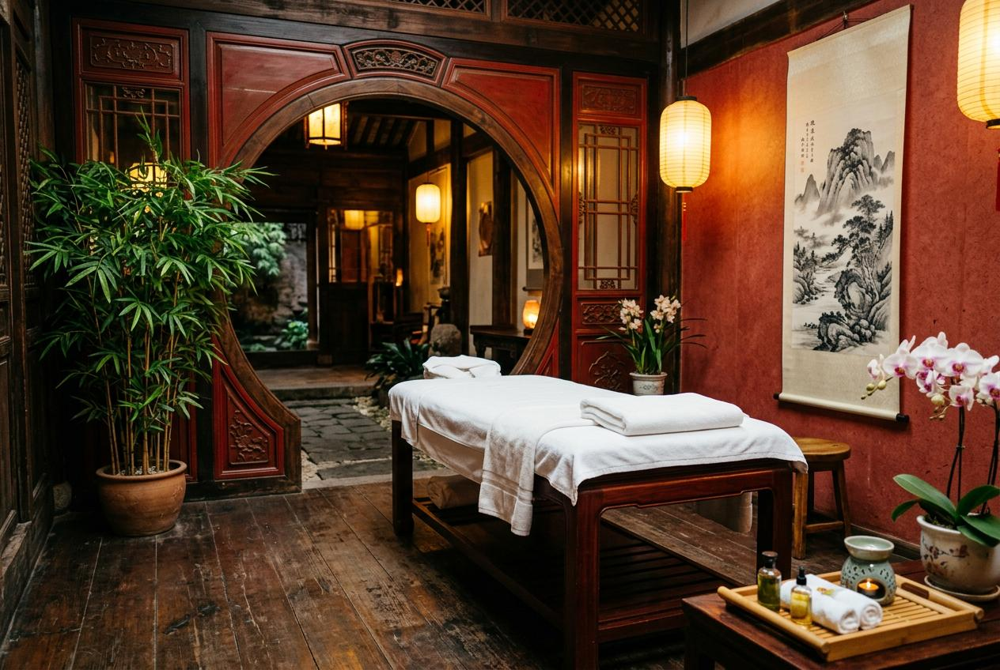

台北男士到府按摩推薦怎麼選？許多男性在繁忙之餘，希望在家中享受按摩。到府服務省去交通時間，讓人在熟悉空間裡放鬆。本文從服務項目、預約流程到價格說明，帶你一次了解。
為什麼男士會選擇按摩服務？
在民俗調理文化背景下，男士身體保養早有傳統。從古時的推拿整復到現代的經絡調理，男性透過外力協助來維持身體狀態，是流傳已久的做法。現代生活節奏緊湊，久坐辦公與高強度運動交替，許多男性發現定期保養有助於維持日常狀態。
到府按摩正回應了這種需求。不必出門、不用趕時間，在家中就能接受服務。這對工作時間不固定、或週末想休息的男性來說，是相對實際的選擇。
台北男士到府按摩推薦常見服務項目
到府服務因環境限制，項目與門市略有不同。以下是四種常見類型：
- 經絡調理按摩：沿著身體經絡走向進行手法操作，針對氣血循環較弱部位加強，適合長時間待在冷氣房的上班族。
- 穴位按壓按摩：針對特定穴位進行定點按壓，處理肩頸僵硬與背部緊繃，不需大型設備即可進行。
- 精油放鬆按摩：按摩師攜帶油品到府，搭配手法進行全身性放鬆。客戶可事先告知偏好氣味。
- 運動後按摩：針對健身或運動後的肌群處理，著重於緊繃部位的放鬆，幫助身體恢復柔軟度。
台北男士按摩服務流程怎麼安排？
到府服務的預約流程比門市多一些確認環節，建議依照以下五步驟：
- 選擇服務類型：先決定按摩項目與時長，確認自身想處理的部位與身體狀況。
- 確認時間與地點：提供完整地址與聯絡方式，說明大樓入口位置與停車資訊。
- 溝通身體狀況：告知運動習慣、受傷史或需加強的部位，讓按摩師事先準備。
- 準備居家空間：整理出平坦安靜的區域，預留按摩床擺放位置與操作動線。
- 進行服務與建議：按摩完成後，按摩師會針對身體狀態給予保養方向。
台北男士按摩價格通常怎麼看？
到府按摩的價格通常包含基本服務費與交通成本，因此會比門市略高。以下列出四種常見項目的服務時間與參考價格區間：
| 服務項目 | 服務時間 | 參考價格區間 |
|---|---|---|
| 肩頸按摩 | 60 分鐘 | 1,200 - 1,800 元 |
| 全身肌肉按摩 | 90 分鐘 | 2,000 - 3,000 元 |
| 運動後按摩 | 60 - 90 分鐘 | 1,800 - 2,800 元 |
| 久坐族肩背按摩 | 60 分鐘 | 1,200 - 2,000 元 |
實際費用會因時段、地點與師傅資歷而異，建議預約前詢問詳細報價。

台北男士按摩推薦怎麼選？
選擇到府按摩時，可以從以下幾個面向評估。首先看按摩師的專業背景，是否具備相關訓練與到府經驗。其次看費用結構，是否將交通費與服務費分開說明。接著看顧客回饋，了解其他人對準時性與手法的評價。此外看預約彈性，能否配合你的時間安排。
到府按摩與門市按摩有什麼差別？
兩種方式各有特點。門市具備專業按摩床與輔助設備，環境專為按摩設計，體驗較為一致。到府服務則以便利取勝，在家中不必外出，結束後可直接休息。若家中有寵物或小孩，建議事先安排。
預約前需要注意哪些事項？
- 確認按摩師的專業證照與訓練背景，選擇有經驗的服務人員。
- 了解總費用計算方式，詢問交通費與時段加價等細節。
- 提前整理適合按摩的空間，確認地面平坦、光線充足。
- 有舊傷或特殊身體狀況者，應在預約時主動告知。
- 保留預約紀錄，確認雙方對時間、地點與服務內容達成共識。
選擇按摩服務的重點整理
找到適合的到府按摩，關鍵在於了解需求與預算。從民俗調理角度看，按摩是維持身體狀態的輔助方式，選對項目才能達到預期效果。建議先從單次體驗開始，感受師傅的手法與溝通方式，再決定是否長期配合。金手指按摩從預約到服務結束，每個環節都重視顧客的實際感受，讓你在家就能獲得理想的按摩體驗。
常見問題
到府按摩推薦怎麼找比較好？
可先從朋友推薦或網路評價著手，重點關注師傅的專業背景與到府經驗。選擇費用說明詳細、預約流程清楚的業者較有保障。
到府按摩和門市按摩推薦選哪個？
若重視便利性與時間彈性，到府較適合；若偏好專業設備與固定環境，門市較理想。可依當天狀況彈性選擇。
到府按摩推薦預約時要問什麼？
建議詢問師傅資歷、總費用計算方式、攜帶設備項目、取消政策，以及是否服務你的居住地區。
怎麼判斷到府按摩推薦是否適合自己？
可先預約單次體驗，觀察師傅的手法、溝通態度與準時性。若感覺自在且效果符合預期，再考慮後續預約。
到府按摩推薦的價格差異大嗎？
價格會因師傅資歷、時段與距離而異。建議多方比較，選擇費用結構明白、無隱藏收費的業者。